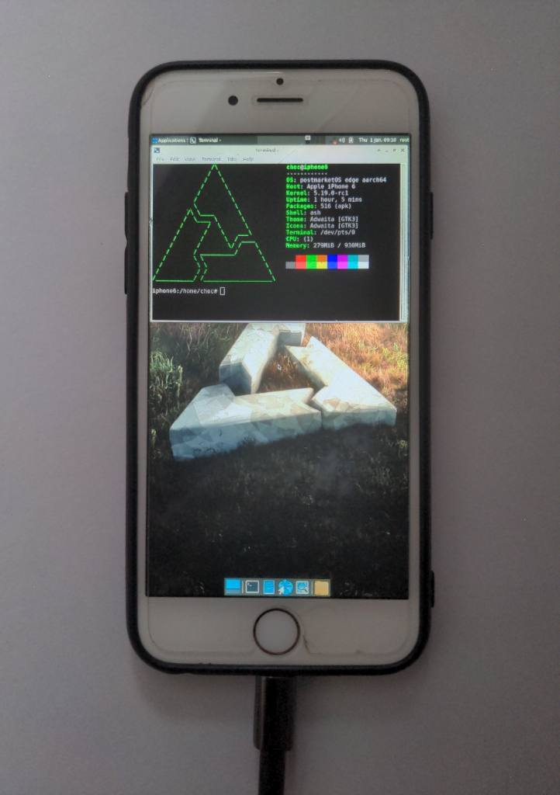

Apple iPhone 6 (apple-iphone6)
|  | |
| Manufacturer | Apple |
|---|---|
| Name | iPhone 6 |
| Codename | apple-iphone6 |
| Released | 2014 |
| Category | testing |
| Original software | iOS |
| Original version | 8 |
| Hardware | |
| Chipset | Apple A8 |
| CPU | 1.4 GHz dual core 64-bit ARMv8 |
| GPU | PowerVR GX6450 |
| Display | 750 x 1334 (IPS LCD, 4.7") |
| Storage | 16, 32, 64, 128 GB |
| Memory | 1 GB |
| Architecture | aarch64 |
| Type | handset |
{kind=link}
| USB Networking |
Works
|
|---|---|
| Flashing | |
| Touchscreen |
Broken
|
| Display |
Partial
|
| WiFi | |
| FDE | |
| Mainline |
Partial
|
| Battery | |
| 3D Acceleration | |
| Audio | |
| Bluetooth | |
| Camera | |
| GPS | |
| Mobile data | |
| SMS | |
| Calls | |
| USB OTG | |
| NFC | |
| Accelerometer | |
|---|---|
| Magnetometer | |
| Ambient Light | |
| Proximity | |
| Hall Effect | |
| Barometer | |
| Power Sensor | |
| Camera Flash | |
|---|---|
| Keyboard | |
| Touchpad | |
| USB-A | |
| HDMI/DP | |
| Ir TX | |
| Ir RX | |
| Stylus | |
| Haptics | |
| Ethernet | |
| FOSS bootloader | |
Contributors
Maintainer(s)
Users owning this device
- Arthurlutz (Notes: doesn't turn on, possible hardware problem)
- Asutoshvariar (Notes: Fully working, grey, 64GB, 12.5.5, jailbroken using checkra1n)
- BlackEyedSquid (Notes: 16GB, old battery, iOS 12.5.x; 64GB, iOS 11)
- ByteXD23! (Notes: 16gb, rose variant, jailbroken, broken screen protector, literally an original battery from 1982💀)
- ByteXD23! (Notes: 64gb, space grey variant, can only be charged at unstable voltage(car charging port))
- Chmod-rwx (Notes: Dead battery and iCloud locked but boots)
- Choc
- Map220v (Notes: Jailbroken)
- Ungeskriptet (Notes: Jailbroken)
Mainline
A mainline fork for this device is available here with further instructions here. Basic functionality (SSH and USB internet) with the "none" user interface has been achieved with a netbooted postmarketOS.
Flashing
You can't currently flash via pmbootstrap, but the kernel can be booted via konradybcio/PongoOS.
Follow this guide to get the starting pieces up and running. If you run into errors compiling pongoOS, remove -Werror from the Makefile's EMBEDDED_CC_FLAGS. Stop after obtaining the dtbpack.
Now, we're going to use pmbootstrap (install it if you haven't already).
Run
pmbootstrap init
to get ready. Use "apple" for the vendor name and "iphone6" for the device name.
When choosing a username and password, write them down. They will be important later.
Choose "none" for the user interface. Do not change the presented options. Device hostname doesn't matter, so select whatever you'd like.
Now, run
pmbootstrap install
pmbootstrap initfs hook_add netboot
pmbootstrap export
to retrieve the rootfs and initramfs.
Now, go back to the pongoOS directory and run:
sudo python3 scripts/load_linux.py -k {path to linux-apple}/arch/arm64/boot/Image.lzma -d {path to linux-apple}/dtbpack -r /tmp/postmarketOS-export/initramfs
If all goes well, you should now see the Waiting for netboot image screen.
To serve the image, run
pmbootstrap netboot serve
If you see a tty and a login screen, that means pmOS is working.
Now's where we use the username and password we set.
Do:
ssh {username}@172.16.42.1
# Enter the password when prompted
Connecting to the internet over USB is recommended.